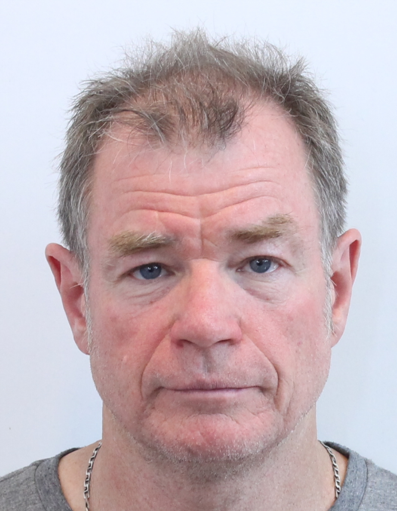

James Connolly

Summary
I have been working with computers for much of my life but used them mostly as a tool required for the work I was doing. I spent 35 years working for Schlumberger Oilfield Services much of the time in the field delivering drilling, logging and MWD services to clients worldwide. I have since retired and have decided to learn more about the inner workings of computers hence an interest in web development.
Education
Bachelor of Science in Geology 1981
Post Graduate Certificate in Computer Technology, Monash University 2001
Work Experience
- Jun 83 - Nov 86 Mud Logger Schlumberger
- Operated computer system at rigsite to monitor drilling
- Evaluated rock samples while drilling
- Created well bore log of drilling and formation data.
- Nov 86 - Apr 92 MWD Engineer Schlumberger
- Operated surface computer systems while running downhole measurement while drilling
- MWD tools surveyed the well path and logged formation gamma ray and resistivity for petropysical evaluation in real time.
- Apr 92 - Jul 96 MWD/LWD Engineer Schlumberger
- Operated both Measurement While Drilling tools coupled with Logging While Drilling
- Tools measured Gamma-ray, resistivity, as well as nuclear tools supplying data on formation density and porosity for real-time petrophysical evaluation.
- Worked in Indonesia, China, Japan, UK, US, Thailand, PNG, Australia
- Jul 96 - Sep 99 Field Management Role Schlumberger
- Field Service Manager managing feild operaties supplying services to clients in various places around the world
- Worked in AUstralia, Indonesia, UAE and Iran
- Sep 99 - Jun 05 Engineering Centre Support Roles Schlumberger
- Worked in Sugarland Texas as Test Engineer, Doumentation Engineer, and Field Support
- Worked in Stonehouse UK as Engineering and Field Support
- Helped introduce xml documentation system as transitioning from word to relational database documentation
- Jun 05 - Sep 21 Directional Driller Schlumberger
- Worked with mud motors and rotary steerable tools steering the well path as dictated by the directional plan
- Drilled vertical, horizontal, J profile wells
- Worked in Australia, PNG, New Zealand, UAE
- Retired from Sclumberger in Sept 2021
- Budding Web Developer
Skils
- Customer Service focus
- Ability to work under extreme pressure
- Ability to troubleshoot and operate technical equipment
- Ability to work within a team and ensure the company goals are achieved
- Reasonable computer literacy
Awards and Certifications
- DD2 - UTC Training Centre. Grantham U.K
- DD1 - UTC Training Centre. Grantham U.K
- PowerDrive Xtra/X5 - UTC Training Centre. Grantham U.K
- LWD – Pau France
- MWD – OJT
- Mud Logging – Singapore and Pau France
Other